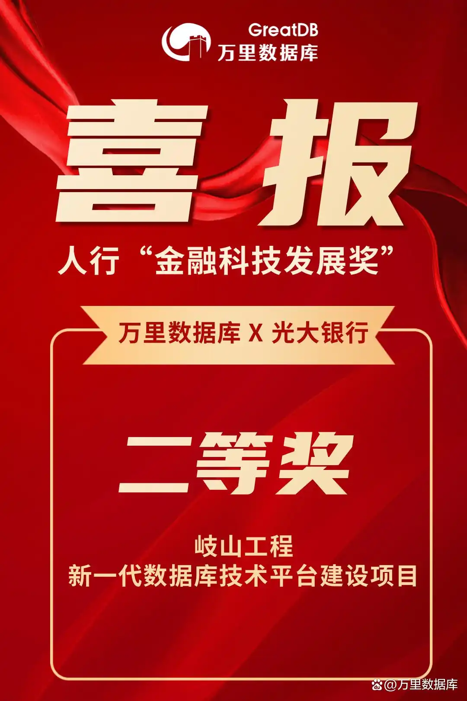

光大银行喜获多项人行“金发奖” 万里数据库深度参与、联研共建
近日，中国人民银行官方发布“2023年度金融科技发展奖获奖项目”名单。万里数据库深度参与的中国光大银行（以下简称：光大银行）岐山工程--新一代数据库技术平台建设项目荣获二等奖，彰显了光大银行在金融科技领域的技术先进性和创新能力，也对万里数据库在金融数字化领域的专业技术实力做出肯定。
作为中国金融业唯一的部级科技奖项，“金融科技发展奖”由中国人民银行于1992年设立，集中评选国内优秀科技创新成果，是金融业最权威的奖项认证。本次评选从621个项目中遴选出257个获奖项目，包括一等奖18项，二等奖93项，三等奖136项等，涵盖数字化转型、科技赋能、信息技术创新应用、安全风险防控等多维度。

# 获奖项目 #
岐山工程——新一代数据库技术平台建设项目
岐山工程中的“岐山”二字，取自《诗经》“居岐之阳，实始翦（jiǎn）商”，以朝代更迭寓意光大银行数据库国产化工作正隆隆进行。该项目既应用了万里数据库与光大银行联研的EverDB系列数据库，也采用了万里数据库、光大银行与华为三方联创的数据库存储一体机。
光大银行、万里数据库与华为共同研发的数据库存储一体机，集国产服务器、国产存储、国产操作系统、国产数据库及国产一体机管理平台于一体，是为金融行业打造的首款国产高端多读多写数据库一体机，为光大银行新一代数据库技术平台提供了坚实的基础底座。
该数据库存储一体机的建设，是国内首例在银行核心业务系统中成功投产的全栈国产化集中式一体化系统，不仅为光大银行提供了更高性能、更可靠的数据库平台，还降低了IT建设设备成本，进一步提振行业信心，加速银行业核心业务系统的国产化改造进程。
降低近60%设备建设成本
通过高密、多写一体机实现资源的充分利用，较分布式方案减少服务器数量约60%；
节省空间和能效50%
通过高性能一体机，较分布式方案节省空间50%；
提升运维效率
通过智能化、平台化、可视化的数据库一体机管理，提高运维效率，减少人力资源成本和故障发生，实现降本增效；
加快业务改造进程
通过128TB大库能力，避免业务改造难题，提高光大银行业务的改造速度，加速光大银行国产替代进程。
光大银行作为万里数据库在金融行业为期多年的战略合作客户，双方自2019年展开合作伊始，历经6年，打造出了联研一体、技术融合、全面深化的合作模式，并在多家央企进行合作模式推广，铸就多项行业标杆典范案例。
作为国内最早一批从事数据库研发与产业化的专业数据库技术公司，万里数据库具备国有大行、股份制银行、城商行、大型券商等多细分领域金融机构的重要业务系统支撑经验，领先实力得到IDC等权威机构认可。
着眼未来，万里数据库将通过持续的科技创新能力，推动数据库赋能业务创新发展，助力金融机构夯实数字化转型的基础设施底座，为金融行业高质量发展提供更丰富、一站式的产品、解决方案与服务！
举报/反馈